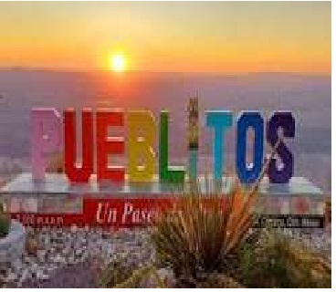

Pueblitos En las estribaciones de la Sierra Santa Rosalía, al sur del estado de Chihuahua, se encuentra uno de los proyectos turísticos más singulares del desierto norteño: “Pueblitos”, un parque ecoturístico y mirador natural que combina paisaje, cultura y conservación en una zona de transición entre el llano y la montaña.
Ubicado a más de 2,000 metros sobre el nivel del mar, Pueblitos forma parte del corredor turístico natural de Camargo, junto con los balnearios de aguas termales, el Lago Colina y las antiguas haciendas coloniales. Su localización estratégica lo convierte en un punto panorámico desde el que es posible observar la amplitud del valle y la disposición de la sierra que bordea el municipio.